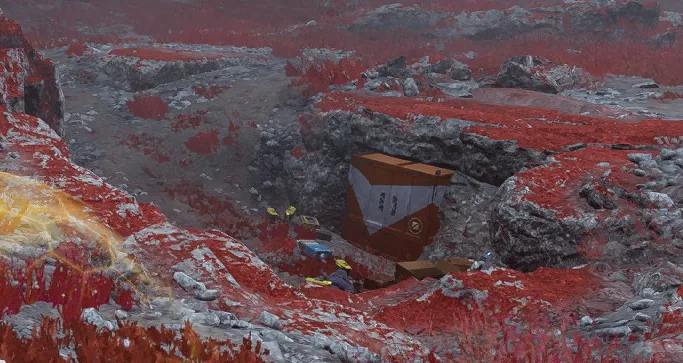
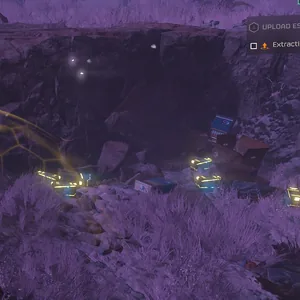

地下 Cache
 Underground Cache
Underground Cache
基本信息 信息
阵营
描述
the 地下 Cache is a 小型 human 建筑, which can be found during missions.
the 地下 Cache is a 小型 human 建筑, which can be found during missions. Opening the 容器 may reveal useful 目录.
描述
This Point of Interest contains a 小型 trench in the ground. Buried in the wall is a cargo 容器, which can contain credits, medals, 申购点 slips or 支援武器. 多个 弹药, stim & 手榴弹 boxes can be found scattered around outside, along with other empty or decorational cardboard boxes. Two half-buried skeletons can be found in the ground. You can find an interactable 背景 pickup, the Handwritten Note, which will state one of the following:
"Cache 库存: - 300 rounds 解放者 弹药
- 14 stims
- 12 gallons water
- 3 frag grenades"
"下一个 week's 运送: -4 Liberators
-2 cases prefab meals
-Fuel drum"
The 容器 may be replaced instead by an excavation.
次要特殊地点
| Variation | 图像 | 目录 | 备注 |
|---|---|---|---|
| Excavation |  |
|
|
| 地下 Cache |
|
||